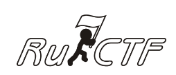

НАША ИСТОРИЯ
RuCTF — это ежегодные открытые межвузовские соревнования и конференция по защите информации. Мы проводим его уже 13 лет. В 2021 он станет четырнадцатым по счету.
Прошлые RuCTF:
Сейчас RuCTF это:
- Сореванования на 25 команд или более двухсот участников
- 80 участников олимиады
- Оффлайн конференция на ~ 500 слушателей
- 30 организаторов и разработчкиков
- 80 волонтеров
- Онлайн сообщество с охватом свыше 15 тысяч профессионалов ИБ по всему миру
13 лет назад всё начиналось с пары аудиторий. С того времени RuCTF непрерывно растёт и становится круче с каждым годом.
И мы хотим рассказать о нашем пути!
НАЧАЛО
В 2008 году состоялся первый RuCTF. Он проходил полностью на базе Уральского Федерального университета и длился 5 дней. Это были первые межвузовские соревнования по защите информации в России!
Тогда в игре участвовали команды из 7 российских городов, а конференция состояла из 6 докладов.
В 2009 году команд стало 16 и появился главный символ мероприятия — бегущий человечек с флагом.
В 2010 году произошло важное событие — RuCTF перестал быть только CTF. Впервые в расписание включили воркшопы, мастер-классы, небольшие соревнования и всё то, что присутствует в мероприятии до сих пор.
С 2016 года проводится ещё одна неотъемлемая часть RuCTF — Всероссийская студенческая олимпиада по защите информации. Она входит в перечень российских студенческих олимпиад и имеет свои собственные призы и награждение на каждом мероприятии.
ИНОСТРАННЫЕ КОМАНДЫ И ВЫХОД ЗА ПРЕДЕЛЫ УНИВЕРСИТЕТА
Одним из отборочных этапов на RuCTF всегда был RuCTFE. Он проводился и проводится онлайн для участников по всему миру. В 2009 году помимо российских команд там участвовали команды из Индии, Германии, Вьетнама, Австрии, США и других стран.
Лучшие игроки RuCTFE получали приглашение приехать в Екатеринбург и поучаствовать в финале. Так в 2015 году на RuCTF впервые приехала команда из Китая, но участвовала вне зачета.
В 2016 году иностранных команд стало намного больше: 5 команд из Германии и по одной из Венгрии, Австрии, Италии и Китая.
В следующих годах к числу стран, участвоваших в финале присоединятся Швейцария, Португалия и США.
К 2016 году RuCTF вырастает настолько, что выходит за рамки Уральского Федерального Университета. Ни одна площадка УрФУ уже не вмещает финальную игру и она переезжает в Ельцин Центр — современное культурное и образовательное пространство. Финал RuCTF проводится в Ельцин Центре с 2016 по 2019 год (и надеемся, будет проходить там после пандемии).
2019 ГОД И НАШИ ДНИ
RuCTF 2019 становится самым мастшабным мероприятием нашей команды:
- Конференция на более 500 слушателей и более 10 часов докладов
— Крутая площадка конференции на базе Технопарка высоких технологий Свердловской области
— Воркшопы от партнеров, баттлы, круглый стол и афтерпати
— ~ 210 участников игры
В 2020 году произошла пандемия, мы отменили оффлайн мероприятия. Традиционную конференцию RuCTF заменила RuCTFE Conf. Мы профессионально отсняли и смонтировали доклады. Кстати, последний доклад вышел 1 мая.
18 июля в онлайн формате пройдёт RuCTF 2021. Мы уже позвали на него 50 команд (это в 2 раза больше, чем в обычно). В день игры будет идти онлайн-трансляция для всех зрителей и участников, а конференция и обмен знаний продлится весь год!
Если не хочешь ничего пропустить — подписывайся на нас в соц. сетях и жми на кнопку!